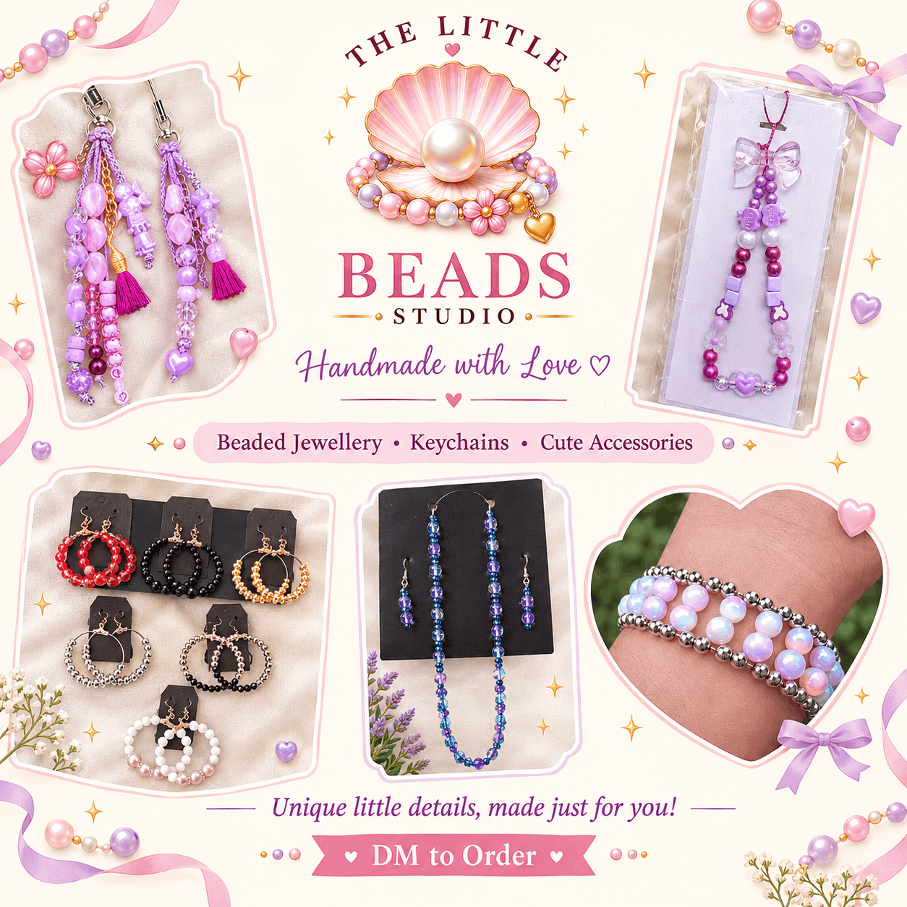
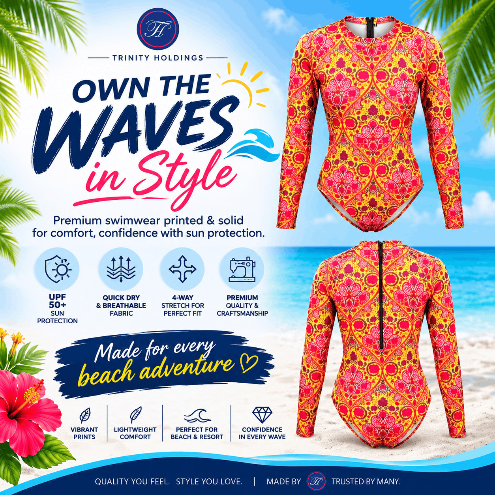
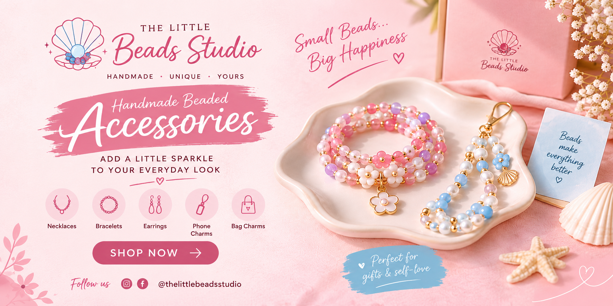
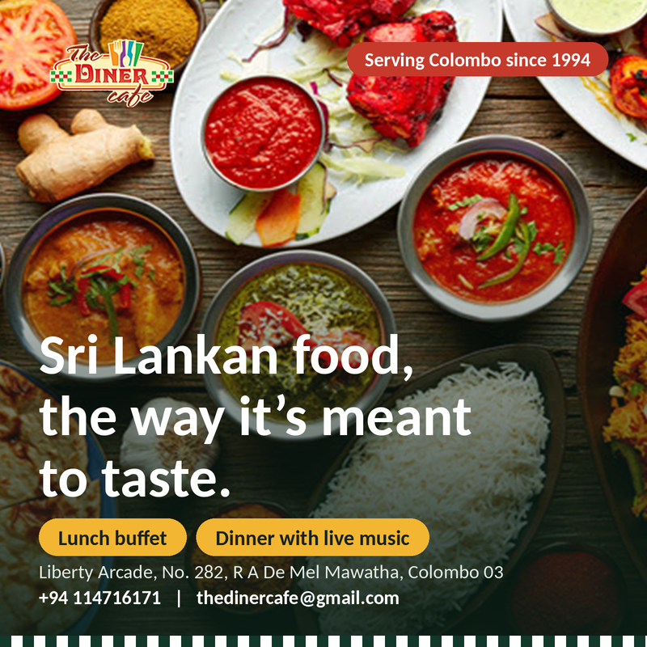
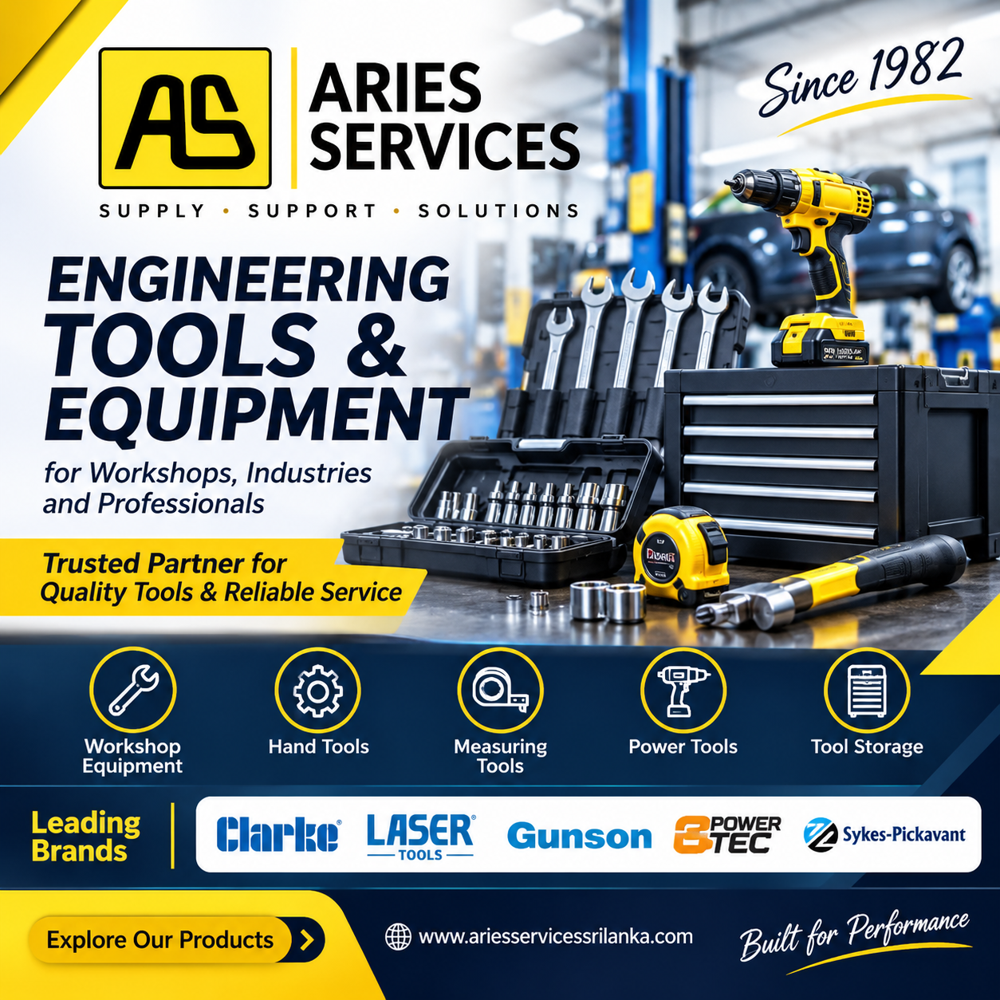

SOCIAL MEDIA DESIGN
Christmas Special Offers on Premium Garage Tools & Equipment | Aries Services Sri Lanka
A warm, feminine promotional post concept using typography, a soft colour palette and a clear call to action.
Based in Baddegama, Sri Lanka
Web developer and creative designer pursuing a Bachelor of Technology in Multimedia and Web Technology. I combine hands-on PHP and WordPress development with a strong graphic design and branding background, and I work comfortably across the full production cycle — from front-end design and development to SEO, content and campaign delivery.
Design · Code · Create
I am a web developer and creative designer who has completed a Bachelor of Technology in Multimedia and Web Technology at the University of Vocational Technology. My skills combine web development, graphic design, and digital marketing. I have experience in building websites using PHP and WordPress , creating engaging brand identities and campaign visuals with Adobe Creative Cloud , and managing digital marketing activities, including SEO, content creation, and social media management for real client accounts. I also have a foundational understanding of Artificial Intelligence (AI) through OpenAI and Cybersecurity through Cisco Networking Academy . I enjoy combining creativity with technology, collaborating with development teams, and transforming ideas into visually appealing designs and functional, user-friendly websites. I am passionate about learning new technologies, improving my skills, and creating digital solutions that deliver value to businesses and their audiences.
PHP web development, HTML & CSS, and WordPress site builds — from structure to content updates.
Graphics, layouts, logos and brand identity assets for web and print, built in Adobe Creative Cloud.
Social content planning, paid ad campaigns and SEO support across Facebook, Instagram, LinkedIn and TikTok.
Foundational knowledge of AI (OpenAI) and cybersecurity fundamentals (Cisco Networking Academy).
Tools and disciplines she works with day to day.
Four roles, moving from ICT fundamentals into design, development and marketing.
Aries Services
RAPS Graphics Solutions
Mahapola Ports & Maritime Academy
Vocational Training Institute
SELECTED CREATIVE WORK
Visual concepts exploring social media content, brand identity, product promotion and digital campaign design. These are original sample concepts created to demonstrate visual direction and layout skills.
A warm, feminine promotional post concept using typography, a soft colour palette and a clear call to action.

View artworkA concept identity system with a simple botanical symbol, refined typography and a coordinated natural colour palette.

View artworkA product-promotion concept designed to keep the product visual, message and call to action easy to scan.

View artworkA wide-format seasonal campaign banner concept with a premium colour palette, strong headline hierarchy and a prominent action button.
A selection of coursework and client work. Replace the mockups below with real screenshots any time.

PHP
A café ordering / listings site built during her studies at the National Vocational Training Institute, Narahenpita.
PHP
A finance-tracking web application project from the National Vocational Training Institute, Narahenpita.

WordPress
Company site built on WordPress for Aries Services Tool Company, Kalubowila, as part of her design and development work there.
PHP
A PHP project from the University of Vocational Technology, Ratmalana, connecting farmers with agricultural resources.
University of Vocational Technology
National Vocational Training Institute
National Vocational Training Centre
Dharmasena Attigala Balika Vidyalaya, Kesbewa
Dharmasena Attigala Balika Vidyalaya, Kesbewa
OpenAI
Cisco Networking Academy
University of Moratuwa — Online Learning Programme
University of Moratuwa — Online Learning Programme
University of Moratuwa — Online Learning Programme
SLASSCOM
Open to web development, design and digital marketing opportunities.